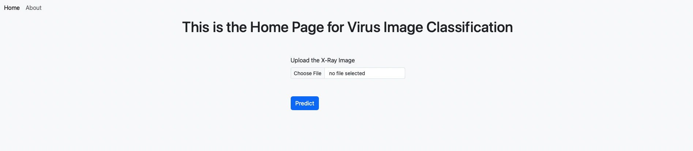

Virus Image Classifier

This project is designed to predict the diagnosis of patients of whether they have Viral Pneumonia, COVID-19, or whether they are normal using Chest X-Ray Images. This was built using PyTorch and some General Python Libraries. The CNN model was implemented to develop the image classifier, which was modeled after the TinyVGG Architecture. The Virus Image Classification was deployed as a web application using Flask with a Front-End built with HTML/Bootstrap. Then, Docker was create an image packaging the Flask application with its dependencies and libraries as a Docker Container.